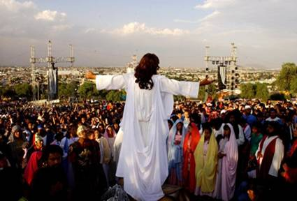
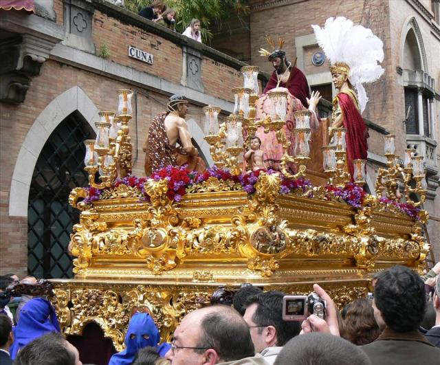
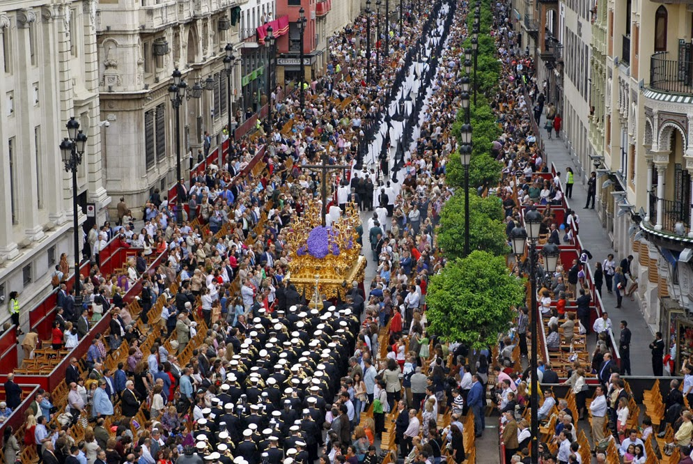
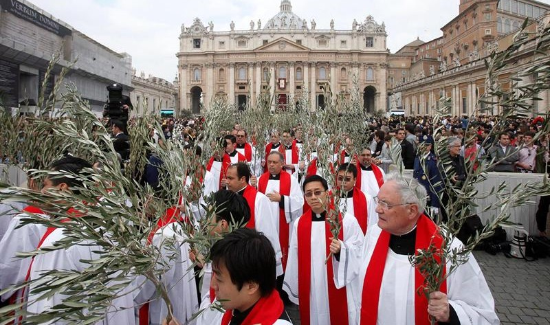
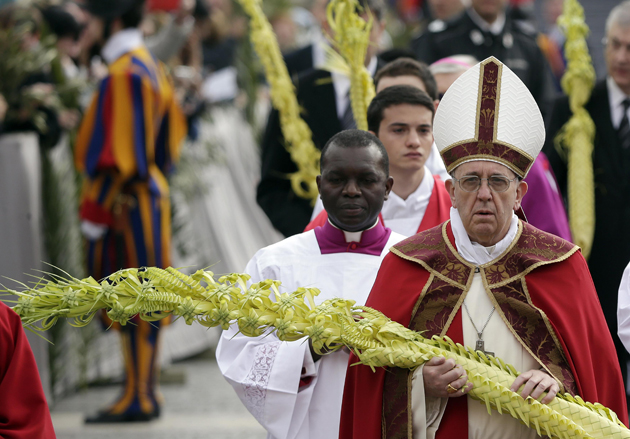
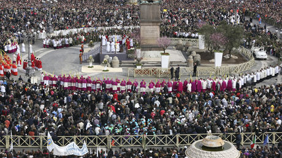
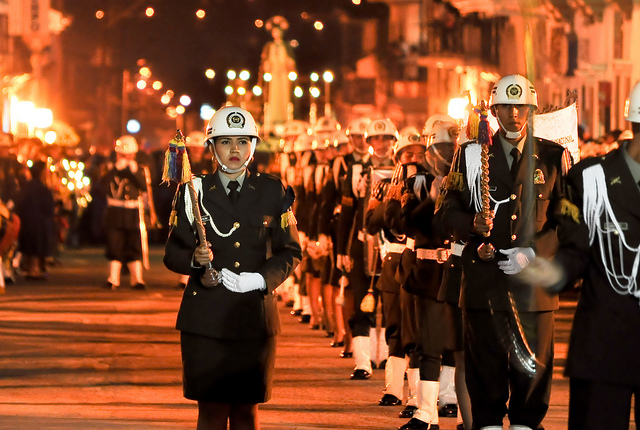
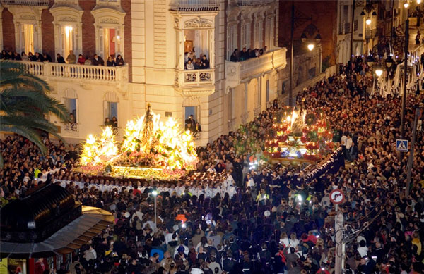
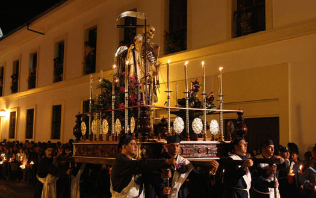

EL SIGNIFICADO DE LA SEMANA SANTA
La Semana Santa es una observación religiosa que se enfoca en la muerte y resurrección de Jesucristo. Esta celebración cristiana ocurre durante la temporada de la Pascua y es de suma importancia porque es cuando se recuerdan los eventos principales que forman la base de esta fe. La Semana Santa comienza con el Domingo de Ramos y termina el domingo de resureccion.
DOMINGO DE RAMOS
Se celebra la entrada triunfal de Jesús en Jerusalén. Es un anticipo de la Pascua. Los tradicionales ramos son los protagonistas. La primera lectura de la Pasión. Primeras procesiones populares.
JUEVES SANTO
Es el día en que se celebra la ültima Cena en que Cristo instituyó la Eucaristía. Es el día del Lavatorio de los pies (sobre esto versa el Evangelio), de la atención especial a los pobres, del Amor Fraterno. Los pasos y procesiones se vuelcan en estas significaciones y empiezan a avanzar, ya en la noche, el misterio del Viernes Santo.
VIERNES SANTO
Este día constituye el núcleo central de la Semana Santa. Es el día del máximo dolor y de la muerte de Jesús. Es día de riguroso luto y no se celebra misa sino un rito de oración. Se lee la Pasión según san Juan, se reza por todas las causas en una continua ceremonia de arrodillarse (Flectamus genua) y levantarse (Levate), y en el centro de la celebración está la solemne adoración de la Cruz: “He aquí el leño de la Cruz del que pendió la salvación del mundo”. “Venid , adorémoslo”. Hoy es el segundo gran día de las procesiones en que se vuelca el dolor por la muerte de Cristo y el dolor de su madre.
SÁBADO SANTO
Este día propiamente no hay culto oficial. Es día de luto por la muerte del Salvador. Continúa durante el día la visita de los monumentos, la celebración del Vía crucis y otras prácticas piadosas. Al anochecer empieza la gran Vigilia Pascual, que en su primera parte (bendición el fuego nuevo y del agua, lecturas, letanías, profesión de fe y Bautizos) corresponde propiamente al Sábado santo; pero la Misa de Gloria, solemnísima, con volteo de campanas y llena de aleluyas, corresponde a la celebración pascual de la Resurrección.
DOMINGO DE PASCUA Ó DE RESURRECCIÓN
La alegría iniciada en la misa de la Vigilia Pascual, que siempre es después de las 12 de la noche, la primera hora del domingo, se prolonga durante toda la mañana. Al mediodía vuelve a celebrarse una Misa solemnísima para celebrar la Resurrección. Aleqh CristoV aneste (Alezé Jristós aneste), En verdad, Cristo ha resucitado. Ese es el saludo pascual en la iglesia ortodoxa.
Vanessa Fuentes Campos
DOMINGO DE PASCUA
El "Domingo de Pascua" o tambien llamado "Domingo de Resureccion" es la fiesta central del cristianismo, en la que se conmemora, de acuerdo con los evangelios canónicos, la resurrección de Jesús al tercer día después de haber sido crucificado.
La Pascua marca el final de la Semana Santa, en la que se conmemora la crucifixión y muerte de Jesús. A la Semana Santa le sigue un período de cincuenta días llamado Tiempo pascual, que termina con el Domingo de Pentecostés.
COMO SE ESTABLECE LA SEMANA SANTA
La Pascua es una fiesta que varía de año a año en relación con nuestros calendarios, pues está basada en el calendario Judío que se guía por la luna. El día central para calcular la Pascua y la cuaresma es el día de la Resurrección del Señor. Para saber la fecha de la cuaresma y su inicio, el miércoles de ceniza, debemos contar 40 días hacia atrás desde el domingo anterior al domingo de Resurrección (domingo de ramos o de palmas). Después del domingo de Resurrección se cuentan 40 días hasta la Ascensión (aunque la fiesta se celebra el Domingo siguiente); una semana después de la Ascensión se celebra Pentecostés (aunque bíblicamente ocurre a los 50 días de la Resurrección).
Como se escoge la fecha:
Esta fecha se escoge a partir de una fórmula establecida por el Emperador Romano Constantino el Grande y el Concilio de Nicea en 325 d. C. Usted puede usar la fórmula para verificar la fecha de Pascua cada año.
Vanessa Fuentes Campos
CELEBRACIÓN EN ATLIXCO
La Conmemoración de Semana Santa en el municipio de Atlixco:
1.-LOS ENGRILLADOS son hombres que para pagar una penitencia o agradecer un milagro, recorren más de 3 kilómetros de calles del municipio, en su camino deben ir descalzos, cargando en sus hombros cadenas de más de 100 kilos, con espinas incrustadas en su cuerpo, vistiendo únicamente una capucha y un calzoncilllo negro
Las Alfombras:
2.-Durante la Semana Santa es tradición elaborar alfombras representando figuras folclóricas y religiosas. Estas artesanías son realizadas con aserrín, flor de corozo, rosas flore margaritas entre otros.Esta costumbre es resultado de una mezcla de tradiciones de diferentes lugares que han conseguido perdurar a través del tiempo, desde la llegada de los conquistadores y los evangelistas hasta nuestros días, perdurando como tradición propia de la religión católica, según sus orígenes.
Domingo de Ramos:
3.- El Domingo de Ramos da comienzo a la Semana Santa, este día rememora la Entrada de Jesús en Jerusalén. De todo este simbolismo parte toda la tradición cristiana, ya que en recuerdo a ello se celebra la bendición de las palmas y las ramas de olivo.
Sabado Santo
4.- En el pasado en algunas partes del país se acostumbraba celebrar el Sábado Santo arrojando cubetadas de agua.1 Es una costumbre que no es autorizada por las autoridades católicas.
Domingo de Resurección:
5.- Se celebra con una Misa solemne en la cual se enciende el cirio pascual, que simboliza a Cristo resucitado, luz de todas las gentes.
En algunos lugares, muy de mañana, se lleva a cabo una procesión que se llama “del encuentro”. En ésta, un grupo de personas llevan la imagen de la Virgen y se encuentran con otro grupo de personas que llevan la imagen de Jesús resucitado, como símbolo de la alegría de ver vivo al Señor.
Vanessa Fuentes Campos
CELEBRACIÓN EN IZTAPALAPA
Los habitantes de Iztapalapa, una de las 16 delegaciones de la Ciudad de México, representan la pasión de Cristo desde hace 169 años.
La escenificación de la Semana Santa surgió a raíz de una epidemia de cólera que afectó a la zona en 1843, habitada entonces por unas 20,000 personas, en su mayoría indígenas, de acuerdo con el cronista de Iztapalapa, Jorge de León.
Los habitantes de la zona hicieron la promesa de emprender una procesión al Cerro de la Estrella si la peste acababa.
Cuando la epidemia cesó, los vecinos del lugar hicieron una peregrinación con imágenes de vírgenes y santos, y dos años después se celebró la primera escenificación teatral de La pasión de Jesucristo



Vanessa Fuentes Campos
CELEBRACIÓN EN EL VATICANO
Ese día se conmemora cuando Jesús entró triunfalmente en Jerusalén, aclamado como un rey por la gente con ramas y palmas de olivos que cortó de los árboles que se encontraban al lado del camino.
Tradicionalmente, el Papa comparte la celebración de ese domingo con los jóvenes, porque fueron justamente los chicos hebreos los que lo recibieron con mayor entusiasmo.



Vanessa Fuentes Campos
CELEBRACIÓN EN POPAYÁN
La Semana Santa de Popayán es una celebración religiosa en la ciudad de Popayán, Colombia, de la pasión, muerte y resurrección de Jesucristo. La conmemoración incluye solemnes y multitudinarias procesiones que se vienen realizando ininterrumpidadamente desde el siglo XVI,desde la noche del Viernes de Dolores hasta la del sábado santo.
En estas procesiones están presentes imágenes de madera talladas por las escuelas artísticas de Sevilla, Granada, Andalucía, Quito, Italia, Francia y Popayán. Las efigies sobre andas o muebles con aditamentos especiales, como plataformas de madera con barrotes cargables, permiten representar los diferentes episodios narrados en los Evangelios, relativos a la pasión, Crucifixión, Muerte y Resurrección de Jesucristo.



Vanessa Fuentes Campos